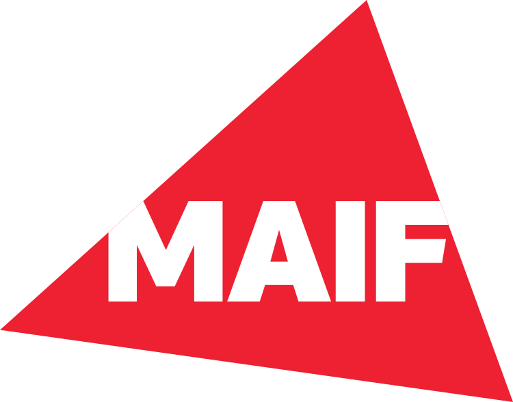

// Alternance

Data Analyst — MAIF
Contexte de la mission
La MAIF fait face à une hausse continue des coûts des licences SAS. Décision stratégique : migrer l'intégralité du patrimoine SAS vers Python. En contexte assurantiel, les pipelines de données sont critiques : qualité réglementaire, traçabilité, reproductibilité.
J'interviens sur cette migration en tant qu'alternant data analyst / data management officer, directement intégré à l'équipe chargée de la transition.
Mes missions
- 01.Analyse et compréhension des programmes SAS existants - souvent peu ou pas documentés.
- 02.Réécriture fonctionnellement équivalente en Python (pandas, numpy, SQL).
- 03.Tests de non-régression et validation des résultats avec les données de référence.
- 04.Documentation technique Google-style pour chaque module livré.
- 05.Collaboration avec les équipes métier pour comprendre les données et les règles implicites.
Ce que j'ai appris
Rigueur réglementaire
Travailler sur des données qui ont un impact réel oblige à une précision que les projets académiques ne donnent pas. Chaque résultat doit être traçable et reproductible.
Communication métier
Traduire des besoins non exprimés en spécifications techniques. L'expertise n'est pas toujours là où on l'attend - les utilisateurs métier ont souvent la connaissance clé.
Code maintenable
Écrire pour celui qui reprend, pas pour soi. Docstring, tests, modules découplés. Un code qu'on ne peut pas reprendre dans 6 mois est un code à moitié livré.
Difficulté majeure surmontée
Pipeline SAS de 2000+ lignes sans documentation. Logique métier enfouie dans des macros imbriquées, données d'entrée non décrites. J'ai reconstitué la logique par analyse systématique des entrées/sorties, croisement avec les experts métier, et tests de non-régression.
Réécriture Python en modules testés et documentés Google-style. Résultat : exécution -80%, maintenabilité totale pour l'équipe. Ce chantier a duré plusieurs semaines et a nécessité une discipline quotidienne pour ne pas perdre le fil.